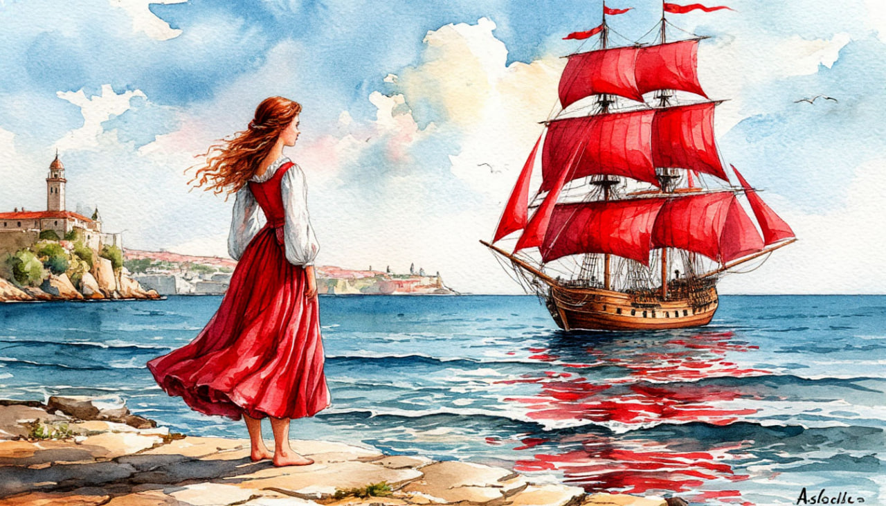

Красивая сказка под парусом алым

Даты тура: с 25 июня (чт) по 29 июня (пт)
Стоимость тура:
- 27 900 р. - взрослый
- 27 700 р. - пенсионеры/студенты/школьники
- 34 000 - одноместное размещение
По программе:
- - Петергоф с посещением Нижнего парка
- - Кронштадт с Морским собором
- - Казанский собор
- - Храм Дацан Гунзэчойнэй
- - Егагиноостровский дворец
- - Территория Петропавловской крепости
- - Царское село с посещением Екатерининского парка
- - Гатчина
Программа тура:
1 день: Отправление
- 17-00- выезд из Костромы от ТРЦ "РИО" (ул. Магистральная, 20), правый угол от центрального входа. Ночной переезд
2 день:
- 08:00 Ориентировочное прибытие в Санкт-Петербург. Встреча с экскурсоводом.
- Завтрак в кафе города.
- Начало экскурсии "Дорогою царей и фаворитов" - Отправляемся в Петергоф или как его называют "Русская Версалия. Автобусная экскурсия по старой Петергофской дороге, в ходе которой вы узнаете о дворцовых и парковых ансамблях, расположившихся вдоль нее. Экскурсия в Петергофе "Летят алмазные фонтаны..." Экскурсия по Нижнему парку с фонтанами. Вы узнаете тайны фонтанов- шутих, увидите величесвенные каскады, прогуляетесь в тени вековых деревьев и узнаете все тайны Петергофа и его владельцев.
- Новинка! Экскурсия по Дворцово-парковому ансамблю Сергиевка. Перед Вами откроется Восхитительный вид на залив, увидите дворец Лейхтенбергских и конечно же огромную каменную голову. По легенде, именно эта скульптура побудила Александра Сергеевича Пушкина к созданию подобного персонажа в поэме «Руслан и Людмила».
- Путевая экскурсия по трассе «Кронштадт – город морской славы». «Уходим под воду!» на глубину 28 метров под Морским каналом по подземному туннелю (его длина около 2 км), который соединяет Южный берег Финского залива с островом Котлин.
- В ходе путевой экскурсии вы узнаете об истории строительства Петербургской дамбы и города Кронштадта.
- Обзорная автобусно-пешеходная экскурсия по г. Кронштадту. В ходе экскурсии Вы в полной мере ощутите дух этого места, увидите удивительные оборонительные и гидротехнические сооружения, памятник адмиралу Макарову, Петровскую пристань, Итальянский дворец, здание Арсенала.
- Экскурсия в величественный Морской собор.
- Заселение в отель
- Поздний обед в отеле
- Свободное время
- 22:30 Ночная автобусная экскурсия подарит Вам уникальную возможность увидеть совсем другой город. Исходящий из ниоткуда серебристый свет окутает громаду Михайловского замка и сделает невесомым Смольный собор. В таинственном сумраке Вы увидите Невский проспект, Летний сад, древних египетских сфинксов и Петропавловскую крепость, загадаете желание у памятника Чижику-Пыжику. В завершение экскурсии Вас ждет уникальное зрелище - плавно раскрывающиеся крылья невских мостов - Дворцового, Троицкого, и Литейного. Успейте насладиться этим зрелищем.
- Стоимость 1 500 руб./взрослый, 1 300 руб./дети до 15 лет
- * Оплата при бронировании тура или сопровождающему группы
За дополнительную плату (по желанию):
3 день:
- Завтрак в отеле
- - Экскурсия на прогулочном кораблике «Северная Венеция». Стоимость 1 500 руб./взрослые, 1 300 руб./дети до 15 лет. Оплата при бронировании или сопровождающему группы
- - Ночная экскурсия по городу - Стоимость 1 500 руб./взрослые, 1 300 руб./дети до 15 лет. Оплата при бронировании или сопровождающему группы
- Далее... Обзорная автобусная экскурсия по городу познакомит Вас с более чем трехсотлетней историей Северной столицы. Вы полюбуетесь панорамой красавицы Невы, увидите великолепные ансамбли центральных городских площадей и знаменитые петербургские памятники.В ходе экскурсии Вы увидите Стрелку Васильевского острова, Летний Сад, Марсово поле, «Медный всадник». Сделаем остановку у Исаакиевского собора, посетим Казанский собор
- Обед в кафе города
- Во время экскурсии Вы сделаете остановку у буддийского храма «Дацан Гунзэчойнэй» – одного из самых необычных сооружений в городе. Храм был построен в начале XX века при поддержке императора Николая II и представителя Далай-ламы XIII в России Агвана Доржиева. Петербургский дацан по праву считается одним из самых красивых в Европе. Храм построен из гранита, богато декорирован, его витражи были созданы знаменитым художником Николаем Рерихом
- Далее наша экскурсия продолжится по Елагиному острову. Вы увидите Кухонный корпус полукруглое двухэтажное здание со скульптурами античных богов и героев, Конюшенный корпус, Фрейлинский.
- Экскурсия в Елагиноостровский дворец. В парадных залах Елагиноостровского дворца представлены интерьеры, которые были созданы по проекту зодчего Карла Росси. Все детали были выполнены по его эскизам. Интерьеры никогда не подвергались перепланировке и были воссозданы в соответствии с задумкой великого архитектора. На первом этаже дворца Вы увидите личные покои императрицы Марии Федоровны и работы лучших декораторов XIX века.
- Экскурсия «Ангел, хранящий Город» по территории Петропавловской крепости.
- СВОБОДНОЕ ВРЕМЯ.
- В это время в городе будет проходить праздник "Алые паруса" Желающие (при наличии возможности) смогут полюбоваться прохождением парусника и фейерверком. Информацию о праздновании уточнять дополнительно. Проводится по разрешению Роспотребнадзора и Правительства Санкт-Петербурга. Туроператор не несет ответственности за отмену или перенос праздника.
- Завтрак в гостинице. Освобождение номеров и выход в автобус (с вещами)
- Экскурсия в Царское село «Золотой Век Екатерины».
- Царское село – один из красивейших пригородов Петербурга, который можно посетить в любое время года.
- По дороге Вы проедете маршрутом, которым царская семья добиралась до своей загородной резиденции. По пути увидите вестовые столбы, оставшиеся от времени их правления и юго-западный район Петербурга с его достопримечательностями.
- Экскурсия по Екатерининскому Парку. Екатерининский парк – красивейший памятник мирового садово-паркового искусства 18 – 20 вв.
- Вас ждет прогулка по Регулярному парку и Эрмитажной роще. Вам подарит неподражаемые наслаждения Пейзажный парк и обязательно очарует волшебный вид на озеро с его загадочными островками.
- Во время экскурсии по парку вы увидите самые яркие и интересные достопримечательности Царского села. Это Екатерининский дворец, Камеронова галерея, Эрмитаж, Эрмитажная кухня, Верхняя и Нижняя ванна, Адмиралтейство, Грот, Холодная баня (Агатовые комнаты), Гранитная терраса, Турецкая баня, Мраморный мост.
- Экскурсия в воинственную Гатчину - резиденцию великого князя Павла Петровича (будущего императора Павла I). Император Павел I был великим магистром Мальтийского рыцарского ордена, что откладывает отпечаток на места его обитания. Во время экскурсии в Дворцовый парк Гатчины вы полюбуетесь Белым озером, Павильоном Венеры, увидите Карпин пруд с одноименным мостом и Березовый домик.
- Экскурсия по Гатчинскому дворцу. Экскурсия в Гатчину познакомит вас с одной из самых интересных императорских резиденций. В ходе экскурсии по Гатчинскому дворцу Вы увидите мемориальные вещи, которые принадлежали императору Павлу I, бережно сохраненные вдовствующей императрицей Марией Федоровной, парадные залы, где царствуют поистине имперское великолепие и роскошь.
- Поздний обед в кафе.
- Отправление домой.
- - проживание в гостинице*
- * "Cosmos Saint-Petersburg Pribaltiyskaya Hotel" 4* (Номер реестровой записи: С782024022202)
- - проезд на автобусе
- - питание: 3 завтрака + 3 обеда
- - услуги гида-экскурсовода
- - экскурсионная программа
- - автобусное обслуживание по программе тура
- - Экскурсия на прогулочном кораблике «Северная Венеция». Стоимость 1 500 руб./взрослые, 1 300 руб./дети до 15 лет. Оплата при бронировании или сопровождающему группы
- - Ночная экскурсия по городу - Стоимость 1 500 руб./взрослые, 1 300 руб./дети до 15 лет. Оплата при бронировании или сопровождающему группы
Дополнительно оплачиваются (по желанию):
4 день:
5 день:
Прибытие в Кострому в первой половине дня (ориентировочно)
В стоимость тура входит:
Дополнительно оплачиваются (по желанию):
- Для бронирования необходимы данные паспорта РФ и свидетельства о рождении, если с вами путешествуют дети
- Предоплата – 50% от стоимости тура. Остаток за 30 дней до даты выезда.
- Любой тур можно оформить не выходя из дома. Подробнее: Тут
Стоимость тура не зафиксированы и могут быть изменены в большую или меньшую сторону в зависимости от уровня спроса в любой момент.
Время начала экскурсий и их порядок указано ориентировочно.
Фирма-исполнитель оставляет за собой право замены экскурсий без уменьшения общего объема экскурсионной программы.
По вопросам бронирования обращайтесь: